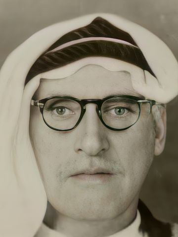

Abdulwahab Abdulaziz Al-Qatami
1893 to 1963
Life in brief
Nakhuda Abdulwahab bin Abdulaziz Al-Qatami went to sea at ten and became one of the great captains of Kuwait. He owned the old baghla Al-Badri, the ship his sons learned on, and from 1936 commanded the giant boom Al-Daw, which Alan Villiers watched him bring into a dark, crowded harbour at night, «little short of miraculous». He sold Al-Badri at Aden in 1941 and died in 1963.
Life facts
- Born
- 1893
- Died
- 1963, Kuwait
- Sea
- At fifteen he sailed with his father to the ports of India. In 1917, during the First World War, his father gave him command of the family baghla Al-Badri, which he took to India to open markets for dates. In 1923 he took his son Bader with him to train, and later handed Al-Badri to Bader
- Sea
- He commanded Al-Daw from about 1936 to about 1941 and made it more famous, sailing it as far as the coasts of East Africa. Alan Villiers watched him bring the great ship into Muttrah harbour in Oman at night and called it «the height of seamanship». In 1939, at Berbera, the British resident asked him to hold an evening of Kuwaiti sea songs on board (Dr Yacoub Yousef Al-Hijji, Sina'at Al-Sufun Al-Shira'iya fil-Kuwait, page 179)
- Sea
- Sulaiman Al-Baloushi recalled sailing with Nakhuda Abdulwahab Al-Qatami to Aden and Zanzibar, and meeting Nakhuda Bader Al-Qatami in Zanzibar with his father (Al-Anbaa, 19 June 2010)
- Al-Daw
- In 1936 he took command of the famous Boom Al-Daw belonging to the merchant Hamad Abdullah Al-Saqr and his brother Saqr. Alan Villiers described the ship and photographed him twice, and Violet Dickson also wrote about it
- Al-Daw
- Al-Daw's registered name was Fateh Al-Kareem. Built in 1914 by Ostad Abdullah bin Rashid and his brothers, of 5,200 mann, it was one of Kuwait's most famous safar booms. Its nakhudas from 1914 to 1943 were Ahmed Sulaiman Al-Hilal, then Jassim Mohammed Al-Mubarak, then Abdulwahab Abdulaziz Al-Qatami, and last Mohammed bin Shubaiba (Fouad Ibrahim Buarki, Al-Safar Al-Shira'i wal-Milaha fi Kuwait Al-Madi, page 128)
- Al-Daw
- Al-Hijji writes that Al-Dhow, about 400 tons, carried up to 5,500 packages of dates and could make 12 knots. She was built in 1914 by master Abdullah bin Rashid for Hamad Al-Saqr and launched before Sheikh Mubarak. In 1936 at Berbera a party was held on her deck for the British Political Agent, with Persian carpets, Kuwaiti songs and dancing until past midnight. In 1943 the British accused her of carrying contraband in the Arabian Sea and confiscated her before releasing her; she was left at Karachi, and when the port was later expanded she was buried under the rubble (Yacoub Yusuf Al-Hijji, The Art of Dhow-building in Kuwait, pages 120 and 121)
- Al-Daw
- From 1936 he commanded Al-Dau (Fath Al-Karim) and took her to the coasts of East Africa (Al-Qabas, 2006)
- Teaching
- His nephew Nakhuda Khalid Mohammed Al-Shaheen Al-Ghanim described how at dawn he gathered them on deck to pray, read Quran, then after breakfast taught them to write letters and read charts
- Business
- Left Al-Daw to run his sons' voyages like a trading company. Bought Boom Fath Al-Khair (Al-Namsa) from Yousef Al-Saqr in 1946, Boom Al-Baz from Ghanim Al-Othman in 1949 and a launch from the government of Muscat in 1950. Later traded in timber and building materials with his son Nakhuda Naser. He was one of the twelve founders named in Gulf Bank's Memorandum of Association, signed on 29 October 1960
- Property
- He later bought the building (imara) of Naser Al-Najdi on the seafront (Dr Abdulmohsen Abdullah Al-Kharafi, Al-Othman: Madrasat Al-Safar Al-Shira'i fil-Kuwait, page 99)
- Al-Badri
- Fouad Buarki lists the baghla Al-Badri, built by Ostad Mohammed Akrouf, as «owned by Al-Qatami» (Fouad Ibrahim Buarki, Al-Safar Al-Shira'i wal-Milaha fi Kuwait Al-Madi, pages 101 and 104). The family records its owner as Abdulwahab Abdulaziz Al-Qatami
- Al-Badri
- Dr Yacoub Al-Hijji writes that Al-Badri, about 200 tons, was built in Kuwait around 1880 for a Kuwaiti merchant by the famous master builder Muhammad Grouf. She was a «school ship» for Abdulwahab Al-Qatami and his sons. Unable to compete with the more seaworthy booms, he sold her on 14 December 1941 to Cowasji Dinshaw and Bros of Aden for just 11,000 Indian rupees, after fifty years as an ocean going dhow, and he built himself a deep sea boom. Under her new owner she was wrecked off southern Arabia a few years later (Yacoub Yusuf Al-Hijji, The Art of Dhow-building in Kuwait, page 118)
- Al-Badri
- Among the last owners of a baghla in Kuwait; his Al-Badri is shown in a photograph in the delta of the Rufiji River, Tanzania, in 1914 (Al-Hiraf wal-Sina'at Al-Bahriya Al-Qadima fil-Kuwait, 2003, pp. 36 and 66), Rufiji delta, Tanzania
- Alan Villiers
- Alan Villiers met him at Zanzibar when his very large boom, which the sailors there called el-Dhow, came in from Kuwait. She could stow 4,000 packages of dates, had a crew of forty five, and carried a model of an Imperial Airways flying boat on her jackstaff. Villiers called him «the famous Abdul-wahhab-al-Kitami, a stern-looking Arab with a mild voice and blue eyes», and his crew helped hoist the yard of Villiers' ship. They met again at Mutrah and in Bahrain, where his longboat raced Villiers' every morning and evening with Abdulwahab himself at the helm, and Villiers often slept aboard the big Al-Daw (Alan Villiers, Sons of Sindbad, 2006 edition, pages 196, 197, 201, 270, 271, 281, 285 and 287)
- Stories
- Dr Yacoub Al-Hijji tells that on a voyage to India Abdulwahab ran out of tobacco for his hubble-bubble, met an Iranian ship that had strayed from its course, took tobacco from her, and led both ships safely to India. He also kept a compass with him in the dabbusa, the cabin under the poop, to check that the helmsman held the right course (Yacoub Y. Al-Hijji, Maritime Folklore of Kuwait, 2021, page 61)
- Navigator
- The editors of Sons of Sindbad: The Photographs name Abdul Wahhab Al-Kitami as one of the deep-sea masters Nejdi knew well, adding that Villiers himself met him at Zanzibar when he came into port on his famous large boom, El-Dhow (William Facey, Yacoub Al-Hijji and Grace Pundyk, Sons of Sindbad: The Photographs, Arabian Publishing, 2006, page 18)
- Source
- alghanim_history, 20 June 2020
Family
- Father
- Abdulaziz Abdulwahab Abdulaziz Al-Qatami
- Mother
- Ruqaya Al-Faraj
- Spouse
- Mariam Khalifa Al-Ghanim
- Children
- Bader Abdulwahab Al-Qatami, Naser Abdulwahab Al-Qatami, Sager Abdulwahab Al-Qatami, Yousef Abdulwahab Al-Qatami, Aisha Abdulwahab Al-Qatami